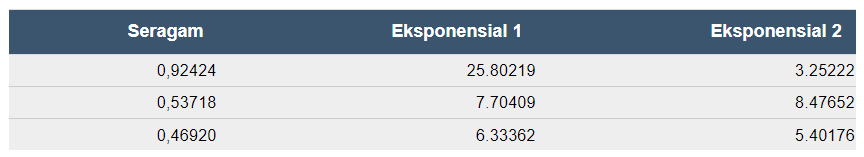

Bab 7 Simulation and Resampling
Bagian 6.1 memperkenalkan simulasi, alat komputasi luar biasa yang sangat berguna dalam pengaturan multivariat yang kompleks.
Bagian 6.2 memperkenalkan resampling dalam konteks bootstrap untuk menentukan ketepatan estimator. Resampling merupakan proses simulasi untuk menggambar dari distribusi empiris.
7.1 Dasar-Dasar Simulasi
Menghasilkan sekitar realisasi independen yang terdistribusi secara merata
Ubah realisasi yang terdistribusi secara seragam menjadi pengamatan dari distribusi probabilitas yang menarik
Hitung jumlah bunga dan tentukan ketepatan jumlah yang dihitung
7.1.1 Menghasilkan Pengamatan Seragam Independen
Generator Kongruensi Linier.
Linear Congruential Generators (LCG) adalah sebuah metode yang membangkitkan bilangan acak yang banyak dipergunakan dalam program komputer. Pada metode ini, dilakukan perulangan pada periode waktu tertentu atau setelah sekian kali pembangkitan.Untuk menghasilkan urutan angka acak, mulailah dengan \(B_0\) , nilai awal yang dikenal sebagai ‘seed’ . Nilai ini diperbarui menggunakan hubungan rekursif
\[B_{n+1} = (a B_n + c) \text{ modulo }m, ~~ n=0, 1, 2, \ldots .\]
Algoritma ini disebut \(a\). Kasus \(c = 0\) disebut generator kongruensial perkalian
Untuk nilai ilustrasi dari \(a\) Dan $m4 , menggunakan Microsoft Visual Basic \(m=2^{24}\) , \(a = 1 , 140 , 671 , 485\) , Dan \(c = 12 , 820 , 163\). Ini adalah mesin yang mendasari pembuatan angka acak dalam program Microsoft Excel.
Urutan yang digunakan oleh analis didefinisikan sebagai \(U_n=B_n/m.\). Analis dapat menginterpretasikan urutan \(U_{i}\) menjadi (kira-kira) identik dan independen terdistribusi secara seragam pada interval (0,1). Untuk mengilustrasikan algoritme, maka pertimbangkan hal berikut.
Contoh 6.1.2. Menghasilkan Nomor Acak Seragam di R. Kode berikut menunjukkan cara menghasilkan tiga angka seragam (0,1) dalam R menggunakan perintah runif. Fungsi set.seed() di R digunakan untuk membuat hasil yang dapat direproduksi saat menulis kode yang melibatkan pembuatan variabel yang mengambil nilai acak.
set.seed(2017)
U <- runif(3)
knitr::kable(U, digits=5, align = "c", col.names = "Uniform")| Uniform |
|---|
| 0.92424 |
| 0.53718 |
| 0.46920 |
7.1.2 Metode Transformasi Invers
Metode transformasi invers digunakan untuk membangkitkan data acak dari distribusi peluang kontinu yang diketahui bentuk fungsinya.
Dengan urutan bilangan acak seragam, kemudian diubah menjadi distribution of interest (\(F\)).
\[X_i=F^{-1}\left( U_i \right) .\]
\[F^{-1}(y) = \inf_x ~ \{ F(x) \ge y \}\]
inf singkatan dari infimum atau batas bawah terbesar. Ini pada dasarnya adalah nilai \(x\) terkecil yang memenuhi pertidaksamaan \(\{F(x) \ge y\}\). Hasilnya adalah urutan \(X_{i}\) kira-kira iid dengan fungsi distribusi \(F\) jika \(U_{i}\) adalah iid dengan fungsi distribusi seragam ( 0 , 1 ).
Contoh 6.1.3. Menghasilkan Bilangan Acak Eksponensial. Misalkan ingin menghasilkan pengamatan dari distribusi eksponensial dengan parameter skala \(θ\) sehingga \(F(x) = 1 - e^{-x/\theta}\). Untuk menghitung transformasi invers, maka dapat menggunakan langkah-langkah berikut:
\[\begin{aligned} y = F(x) &\Leftrightarrow y = 1-e^{-x/\theta} \\ &\Leftrightarrow -\theta \ln(1-y) = x = F^{-1}(y) . \end{aligned}\]
Jadi, jika \(U\) memiliki distribusi seragam (0,1), maka \(X = -\theta \ln(1-U)\) memiliki distribusi eksponensial dengan parameter \(θ\).
Seperti pada Contoh 6.1.2 kemudian mengubahnya menjadi variabel acak terdistribusi eksponensial independen dengan rata-rata \(10\). Sebagai alternatif, menggunakan fungsi rexp pada R digunakan untuk mensimulasikan sekumpulan bilangan acak yang diambil dari distribusi eksponensial.
set.seed(2017)
U <- runif(3)
X1 <- -10*log(1-U)
set.seed(2017)
X2 <- rexp(3, rate = 1/10)
Contoh 6.1.4. Menghasilkan Angka Acak Pareto. Misalkan ingin menghasilkan pengamatan dari distribusi Pareto dengan parameter \(α\) dan \(θ\) sehingga \(F(x) = 1 - \left(\frac{\theta}{x+\theta} \right)^{\alpha}\). Untuk menghitung transformasi invers, maka dapat menggunakan langkah-langkah berikut:
\[\begin{aligned} y = F(x) &\Leftrightarrow 1-y = \left(\frac{\theta}{x+\theta} \right)^{\alpha} \\ &\Leftrightarrow \left(1-y\right)^{-1/\alpha} = \frac{x+\theta}{\theta} = \frac{x}{\theta} +1 \\ &\Leftrightarrow \theta \left((1-y)^{-1/\alpha} - 1\right) = x = F^{-1}(y) .\end{aligned}\]
Dengan demikian, \(X = \theta \left((1-U)^{-1/\alpha} - 1\right)\) memiliki distribusi Pareto dengan parameter \(α\) dan \(θ\) .
Contoh 6.1.5. Menghasilkan Bilangan Acak Bernoulli. Misalkan ingin mensimulasikan variabel acak dari distribusi Bernoulli dengan parameter \(Q= 0,85\).
Grafik fungsi distribusi kumulatif pada Gambar diatas menunjukkan bahwa fungsi kuantil dapat ditulis sebagai berikut.
\[\begin{aligned} F^{-1}(y) = \left\{ \begin{array}{cc} 0 & 0<y \leq 0.85 \\ 1 & 0.85 < y \leq 1.0 . \end{array} \right. \end{aligned}\]
Jadi, dengan transformasi invers kita dapat mendefinisikan
\[\begin{aligned} X = \left\{ \begin{array}{cc} 0 & 0<U \leq 0.85 \\ 1 & 0.85 < U \leq 1.0 \end{array} \right. \end{aligned}\]
Misalnya, ingin menghasilkan tiga angka acak untuk diperoleh
set.seed(2017)
U <- runif(3)
X <- 1*(U > 0.85)
Contoh 6.1.6. Menghasilkan Angka Acak dari Distribusi Diskrit. Pertimbangkan waktu kegagalan mesin dalam lima tahun pertama. Distribusi waktu kegagalan diberikan sebagai:
Dengan menggunakan grafik fungsi distribusi pada gambar diatas , dengan transformasi invers dapat definisikan
\[\small{ \begin{aligned} X = \left\{ \begin{array}{cc} 1 & 0<U \leq 0.1 \\ 2 & 0.1 < U \leq 0.3\\ 3 & 0.3 < U \leq 0.4\\ 4 & 0.4 < U \leq 0.8 \\ 5 & 0.8 < U \leq 1.0 . \end{array} \right. \end{aligned} }\]
Untuk variabel acak diskrit umum mungkin tidak ada urutan hasil. Misalnya, seseorang dapat memiliki salah satu dari lima jenis produk asuransi jiwa dan dapat menggunakan algoritme berikut untuk menghasilkan hasil acak:
\[{\small \begin{aligned} X = \left\{ \begin{array}{cc} \textrm{whole life} & 0<U \leq 0.1 \\ \textrm{endowment} & 0.1 < U \leq 0.3\\ \textrm{term life} & 0.3 < U \leq 0.4\\ \textrm{universal life} & 0.4 < U \leq 0.8 \\ \textrm{variable life} & 0.8 < U \leq 1.0 . \end{array} \right. \end{aligned} }\]
Analis lain dapat menggunakan prosedur alternatif seperti:
\[{\small \begin{aligned} X = \left\{ \begin{array}{cc} \textrm{whole life} & 0.9<U<1.0 \\ \textrm{endowment} & 0.7 \leq U < 0.9\\ \textrm{term life} & 0.6 \leq U < 0.7\\ \textrm{universal life} & 0.2 \leq U < 0.6 \\ \textrm{variable life} & 0 \leq U < 0.2 . \end{array} \right. \end{aligned} }\]
Kedua algoritma menghasilkan (dalam jangka panjang) probabilitas yang sama, misalnya, \(\Pr(\textrm{whole life})=0.1\) , Dan seterusnya. Jadi, tidak ada yang salah ini menunjukkan bahwa ada lebih dari satu cara untuk mencapai suatu tujuan. Demikian pula, dapat menggunakan algoritme alternatif untuk hasil yang diurutkan (seperti waktu kegagalan 1, 2, 3, 4, atau 5, di atas).
Contoh 6.1.7. Menghasilkan Angka Acak dari Distribusi Hybrid. Pertimbangkan variabel acak yaitu 0 dengan probabilitas 70% dan terdistribusi secara eksponensial dengan parameter \(\theta= 10,000\) dengan probabilitas 30%. Dalam aplikasi asuransi, ini mungkin sesuai dengan peluang 70% tidak memiliki klaim asuransi dan peluang klaim 30% - jika klaim terjadi, maka itu didistribusikan secara eksponensial. Fungsi distribusi, digambarkan pada gambar dibawah ini , diberikan sebagai
\[\begin{aligned} F(y) = \left\{ \begin{array}{cc} 0 & x<0 \\ 1 - 0.3 \exp(-x/10000) & x \ge 0 . \end{array} \right. \end{aligned}\]
Dari Gambar diatas dapat dilihat bahwa transformasi invers untuk membangkitkan variabel acak dengan fungsi distribusi ini adalah
\[\begin{aligned} X = F^{-1}(U) = \left\{ \begin{array}{cc} 0 & 0< U \leq 0.7 \\ -1000 \ln (\frac{1-U}{0.3}) & 0.7 < U < 1 . \end{array} \right. \end{aligned}\]
7.1.3 (6.1.3) Presisi Simulasi
Setelah mengetahui cara menghasilkan realisasi simulasi independen dari distribusi bunga, maka dapat menyusun distribusi empiris (distribusi empiris mengelompokkan data ke dalam suatu interval, di mana frekuensi data dalam setiap interval dapat digunakan untuk menentukan frekuensi relatifnya) dan memperkirakan distribusi yang diperlukan.
Banyak dari aplikasi ini dapat direduksi menjadi masalah perkiraan \(\mathrm{E~}[h(X)]\) , Di mana \(h(\cdot)\) adalah beberapa fungsi yang diketahui. Berdasarkan simulasi R (replikasi), sehingga didapatkan \(X_1,\ldots,X_R\). Dari sampel yang disimulasikan ini, dapat menghitung rata-rata sebagai berikut.
\[\overline{h}_R=\frac{1}{R}\sum_{i=1}^{R} h(X_i)\]
sebagai perkiraan simulasi dari \(\mathrm{E~}[h(X)]\). Untuk memperkirakan ketepatan perkiraan tersebut, maka menggunakan varians simulasi
\[s_{h,R}^2 = \frac{1}{R-1} \sum_{i=1}^{R}\left( h(X_i) -\overline{h}_R \right) ^2.\]
Dari independensi, kesalahan standar estimasi adalah \(s_{h,R}/\sqrt{R}\). Kesalahan standar estimasi dapat dibuat sekecil dengan meningkatkan jumlah replikasi \(R\).
Contoh 6.1.8. Manajemen portofolio. Pada Bagian 3.4 telah mempelajari cara menghitung nilai ekspektasi polis dengan deductible. Sebagai contoh dari sesuatu yang tidak dapat dilakukan dengan ekspresi bentuk tertutup, kemudian akan mempertimbangkan dua risiko. (Ini adalah variasi dari contoh yang lebih kompleks yang akan dibahas sebagai Contoh 10.3.6).
Dengan mempertimbangkan dua risiko properti dari perusahaan telekomunikasi:
\(X_1\) - bangunan, dimodelkan menggunakan distribusi gamma dengan rata-rata 200 dan parameter skala 100.
\(X_2\) - kendaraan bermotor, dimodelkan menggunakan distribusi gamma dengan mean 400 dan parameter skala 200.
Nyatakan risiko total sebagai \(X = X_1 + X_2\). Untuk penyederhanaan, dapat diasumsikan bahwa risiko ini tidak bergantung.
Untuk mengelola risiko maka diperlukan perlindungan atau penjamin asuransi dan bersedia mempertahankan jumlah bangunan dan kendaraan bermotor kecil secara internal, hingga \(M\). Jumlah acak lebih dari \(M\) akan memiliki pengaruh yang tidak terduga pada anggaran dan karenanya untuk jumlah ini dapat mencari perlindungan asuransi. Dinyatakan secara matematis, risiko yang dipertahankan adalah \(Y_{retained}=\min(X_1 + X_2,M)\) dan bagian penanggung adalah \(Y_{insurer} = X- Y_{retained}\).
Misalnya \(M= 400\) serta \(R = 1000000\).
A. Dengan pengaturan tersebut, ingin menentukan perkiraan jumlah klaim dan standar deviasi terkait dari (i) yang ditahan, (ii) yang diterima oleh perusahaan asuransi, dan (iii) total jumlah keseluruhan.
# Simulate the risks
nSim <- 1e6 #number of simulations
set.seed(2017) #set seed to reproduce work
X1 <- rgamma(nSim ,alpha1,scale = theta1)
X2 <- rgamma(nSim ,alpha2,scale = theta2)
# Portfolio Risks
X <- X1 + X2
Yretained <- pmin(X, M)
Yinsurer <- X - YretainedKemudian jumlah klaim yang diharapkan adalah
# Expected Claim Amounts
ExpVec <- t(as.matrix(c(mean(Yretained),mean(Yinsurer),mean(X))))
sdVec <- t(as.matrix(c(sd(Yretained),sd(Yinsurer),sd(X))))
outMat <- rbind(ExpVec, sdVec)
colnames(outMat) <- c("Retained", "Insurer","Total")
row.names(outMat) <- c("Mean","Standard Deviation")
round(outMat,digits=2)
B. Untuk klaim yang diasuransikan, kesalahan standar perkiraan simulasi adalah \(s_{h,R}/\sqrt{1000000} =/\sqrt{1000000} =0.281\). Untuk contoh ini, simulasi cepat dan nilai yang besar seperti 1000000 adalah pilihan yang mudah. Namun, untuk masalah yang lebih kompleks, ukuran simulasi mungkin menjadi masalah.
Yinsurefct <- function(numSim){
X1 <- rgamma(numSim,alpha1,scale = theta1)
X2 <- rgamma(numSim,alpha2,scale = theta2)
# Portfolio Risks
X <- X1 + X2
Yinsurer <- X - pmin(X, M)
return(Yinsurer)
}
R <- 1e3
nPath <- 20
set.seed(2017)
simU <- matrix(Yinsurefct(R*nPath),R,nPath)
sumP2 <- apply(simU, 2, cumsum)/(1:R)matplot(1:R,sumP2[,1:20],type="l",col=rgb(1,0,0,.2), ylim=c(100, 400),
xlab=expression(paste("Number of Simulations (", italic('R'), ")")),
ylab="Expected Insurer Claims")
abline(h=mean(Yinsurer),lty=2)
bonds <- cbind(1.96*sd(Yinsurer)*sqrt(1/(1:R)),-1.96*sd(Yinsurer)*sqrt(1/(1:R)))
matlines(1:R,bonds+mean(Yinsurer),col="red",lty=1)Dari grafik diatas dapat dilihat, semakin banyak jumlah simulasi R maka semakin sedikit jumlah klaim yang diharapkan.
Penentuan Jumlah Simulasi
Misalkan ingin berada dalam 1% dari rata-rata dengan kepastian 95%. Artinya, \(\Pr \left( |\overline{h}_R - \mathrm{E~}[h(X)]| \le 0.01 \mathrm{E~}[h(X)] \right) \ge 0.95\). Menurut teorema limit pusat, perkiraan harus terdistribusi secara normal dan mengharapkan R cukup besar untuk \(0.01 \mathrm{E~}[h(X)]/\sqrt{\mathrm{Var~}[h(X)]/R}) \ge 1.96\) . (Ingat bahwa 1,96 adalah persentil ke-97,5 dari distribusi normal standar.) Mengganti \(\mathrm{E~}[h(X)]\) Dan \(\mathrm{Var~}[h(X)]\) dengan estimasi,sehingga
\[\frac{.01\overline{h}_R}{s_{h,R}/\sqrt{R}}\geq 1.96\]
\[\begin{equation} R \geq 38,416\frac{s_{h,R}^2}{\overline{h}_R^2}. \tag{6.1} \end{equation}\]
Contoh 6.1.9. Pilihan Perkiraan.
Sebuah aplikasi penting dari simulasi adalah pendekatan dari \(\mathrm{E~}[h(X)]\). Dalam contoh ini, kami menunjukkan bahwa pilihan dari \(h(\cdot)\) fungsi dan distribusi \(X\) dapat berperan.
Pertimbangkan pertanyaan berikut: apa itu \(\Pr[X>2]\). Kapan \(X\) mempunyai sebuah distribusi Cauchy (distribusi probabilitas kontinu), dengan fungsi kepadatan \(f(x) =\left(\pi(1+x^2)\right)^{-1}\), pada garis sebenarnya? Nilai sebenarnya adalah
\[\Pr\left[X>2\right] = \int_2^\infty \frac{dx}{\pi(1+x^2)} .\]
true_value <- integrate(function(x) 1/(pi*(1+x^2)),lower=2,upper=Inf)$value
true_value ## [1] 0.1475836Perkiraan 1. Sebagai alternatif, seseorang dapat menggunakan teknik simulasi untuk memperkirakan besaran tersebut. Dari kalkulus, dapat memeriksa bahwa fungsi kuantil dari distribusi Cauchy adalah \(F^{-1}(y) = \tan \left( \pi(y-0.5) \right)\) . Kemudian, dengan variasi seragam (0,1) yang disimulasikan, \(U_1, \ldots, U_R\), sehingga dapat membangun estimator
Q <- function(u) tan(pi*(u-.5))
R <- 1e6
set.seed(1)
X <- Q(runif(R))
p1 <- mean(X>2)
se.p1 <- sd(X>2)/sqrt(R)
p1## [1] 0.147439se.p1## [1] 0.0003545432Dengan satu juta simulasi, diperoleh estimasi sebesar 0,14744 dengan standard error 0,355 (dibagi 1000). Dapat dibuktikan bahwa varian dari \(P_1\) teratur \(0.127/R\).
Perkiraan 2. Dengan pilihan lain dari \(h(\cdot)\) Dan \(f(\cdot)\) adalah mungkin untuk mengurangi ketidakpastian bahkan dengan menggunakan jumlah simulasi yang sama \(R\) . Untuk memulai, seseorang dapat menggunakan simetri distribusi Cauchy untuk menulis \(\Pr[X>2]=0.5\cdot\Pr[|X|>2]\) . Dengan ini, dapat membuat estimator baru
\[p_2 = \frac{1}{2R}\sum_{i=1}^R \mathrm{I}(|F^{-1}(U_i)|>2) .\]
Dengan satu juta simulasi, diperoleh estimasi sebesar 0,14748 dengan standard error 0,228 (dibagi 1000). Dapat dibuktikan bahwa varian dari \(P_2\) teratur \(0.052/R\).
Perkiraan 3. Integral tak wajar dapat ditulis dengan sifat simetri sederhana (karena fungsinya simetris dan integral pada garis real sama dengan 1 ).
\[\int_2^\infty \frac{dx}{\pi(1+x^2)}=\frac{1}{2}-\int_0^2\frac{dx}{\pi(1+x^2)} .\]
\[p_3 = \frac{1}{2}-\frac{1}{R}\sum_{i=1}^R h_3(2U_i), ~~~~~~\text{where}~h_3(x)=\frac{2}{\pi(1+x^2)} .\]
Dengan satu juta simulasi, diperoleh estimasi sebesar 0,14756 dengan standard error 0,169 (dibagi 1000). Dapat dibuktikan bahwa varian dari \(P_3\) teratur \(0,0285 / R\).
Perkiraan 4. Akhirnya, seseorang juga dapat mempertimbangkan beberapa perubahan variabel dalam integral.
\[\int_2^\infty \frac{dx}{\pi(1+x^2)}=\int_0^{1/2}\frac{y^{-2}dy}{\pi(1-y^{-2})} .\]
\[p_4 = \frac{1}{R}\sum_{i=1}^R h_4(U_i/2),~~~~~\text{where}~h_4(x)=\frac{1}{2\pi(1+x^2)} .\]
Dengan satu juta simulasi, diperoleh estimasi sebesar 0,14759 dengan standard error 0,01 (dibagi 1000). Dapat dibuktikan bahwa varian dari \(P_4\) teratur \(0,00009 / R\) , yang jauh lebih kecil dari yang lainnya.
Tabel berikut merupakan rangkuman dari empat pilihan \(h(\cdot)\) Dan \(f(\cdot)\)) untuk memperkirakan \(\Pr[X>2] = 0,14758\). Kesalahan standar bervariasi. Jadi, jika memiliki tingkat akurasi yang diinginkan, maka jumlah simulasi sangat bergantung pada bagaimana menulis integral yang akan diaproksimasi.
7.1.4 Simulasi dan Inferensi Statistik
Simulasi tidak hanya membantu dalam memperkirakan nilai yang diharapkan tetapi juga berguna dalam menghitung aspek lain dari fungsi distribusi. Secara khusus, ini sangat berguna ketika distribusi statistik uji terlalu rumit untuk diturunkan. Dalam hal ini, seseorang dapat menggunakan simulasi untuk memperkirakan distribusi referensi.
Contoh 6.1.10. Uji Distribusi Kolmogorov-Smirnov.
Misalkan terdapata \(n = 100\) observasi \(\{x_1,\cdots,x_n\}\) yang, tidak diketahui oleh analis, dihasilkan dari distribusi gamma dengan parameter \(\alpha = 6\) Dan \(\theta=2\) . Analis percaya bahwa data berasal dari distribusi lognormal dengan parameter 1 dan 0,4 dan ingin menguji asumsi ini.
set.seed(1)
n <- 100
x <- rgamma(n, 6, 2)
u=seq(0,7,by=.01)
vx = c(0,sort(x))
vy = (0:n)/npar(mfrow=c(1,2))
hist(x,probability = TRUE,main="Histogram", col="light blue",
border="white",xlim=c(0,7),ylim=c(0,.4))
lines(u,dlnorm(u,1,.4),col="red",lty=2)
plot(vx,vy,type="l",xlab="x",ylab="Cumulative Distribution",main="Empirical cdf")
lines(u,plnorm(u,1,.4),col="red",lty=2)
Dari grafik diatas dapat dilihat bahwa garis putus-putus merah tersebut sesuai dengan distribusi lognormal yang dihipotesiskan.
Perlu digaris bawahi bahwa statistik Kolmogorov-Smirnov sama dengan perbedaan terbesar antara distribusi empiris dan hipotesis. Ini \(\max_x |F_n(x)-F_0(x)|\), Di mana \(F_0\) adalah distribusi lognormal yang dihipotesiskan, sehingga
# test statistic
D <- function(data, F0){
F <- Vectorize(function(x) mean((data<=x)))
n <- length(data)
x <- sort(data)
d1=abs(F(x+1e-6)-F0(x+1e-6))
d2=abs(F(x-1e-6)-F0(x-1e-6))
return(max(c(d1,d2)))
}
D(x,function(x) plnorm(x,1,.4))## [1] 0.09703627ks.test(x, plnorm, mean=1, sd=0.4)##
## Asymptotic one-sample Kolmogorov-Smirnov test
##
## data: x
## D = 0.097037, p-value = 0.3031
## alternative hypothesis: two-sidedSecara khusus, untuk menghitung P-value, maka hasilkan ribuan sampel acak dari \(LN(1,0.4)\) distribusi (dengan ukuran yang sama), dan menghitung secara empiris distribusi statistik,
ns <- 1e4
d_KS <- rep(NA,ns)
# compute the test statistics for a large (ns) number of simulated samples
for(s in 1:ns) d_KS[s] <- D(rlnorm(n,1,.4),function(x) plnorm(x,1,.4))
mean(d_KS>D(x,function(x) plnorm(x,1,.4)))## [1] 0.2843hist(d_KS,probability = TRUE,col="light blue",border="white",xlab="Test Statistic",main="")
lines(density(d_KS),col="red")
abline(v=D(x,function(x) plnorm(x,1,.4)),lty=2,col="red")Distribusi yang disimulasikan berdasarkan 10.000 sampel acak dirangkum grafik diatas. Di sini, statistik melebihi nilai empiris (0,09704) dalam 28,43%, sedangkan P-value adalah 0,3031. Baik untuk simulasi maupun teoretis P-value, kesimpulannya adalah data tidak memberikan bukti yang cukup untuk menolak hipotesis distribusi lognormal.
Meskipun hanya perkiraan, pendekatan simulasi bekerja dalam berbagai distribusi dan uji statistik tanpa perlu mengembangkan nuansa teori yang mendasari untuk setiap situasi. Berikut ringkasan prosedur untuk mengembangkan distribusi simulasi dan p-value sebagai berikut:
Gambarlah sampel berukuran n , katakanlah, \(X_1, \ldots, X_n\), dari fungsi distribusi yang diketahui \(F\). Hitung statistik minat, dilambangkan sebagai \(\hat{\theta}(X_1, \ldots, X_n)\). Panggil ini \(\hat{\theta}^r\) untuk replikasi ke -r .
Ulangi ini \(r=1, \ldots, R\) kali untuk mendapatkan sampel statistik, \(\hat{\theta}^1, \ldots,\hat{\theta}^R\).
Dari sampel statistik pada Langkah 2, \(\{\hat{\theta}^1, \ldots,\hat{\theta}^R\}\), hitung ukuran ringkasan minat, seperti p-value.
7.2 Bootstrap dan Resampling
Subbab ini akan mempelajari :
Hasilkan distribusi bootstrap nonparametrik untuk statistik minat
Gunakan distribusi bootstrap untuk menghasilkan estimasi presisi untuk statistik yang diminati, termasuk bias, standar deviasi, dan interval kepercayaan
Lakukan analisis bootstrap untuk distribusi parametrik
7.2.1 Dasar-dasar Bootstrap
Metode bootstrap adalah metode berbasis resampling data sampel dengan syarat pengembalian pada datanya dalam menyelesaikan statistik ukuran suatu sampel dengan harapan sampel tersebut mewakili data populai sebenarnya, biasanya ukuran resampling diambil secara ribuan kali agar dapat mewakili data populasinya. Algoritma resamplign umum dengan \(\{X_1, \ldots, X_n\}\) untuk menunjukkan sampel asli dan \(\{X_1^*, \ldots, X_n^*\}\) menunjukkan undian yang disimulasikan.
Untuk setiap sampel, \(n\) merupakan undian simulasi, jumlah yang sama dengan ukuran sampel asli. Untuk membedakan prosedur ini dari simulasi, biasanya digunakan \(B\) (untuk bootstrap) sebagai jumlah sampel yang disimulasikan. Sehingga dapat dituliskan \(\{X_1^{(b)}, \ldots, X_n^{(b)}\}\).
Ada dua metode resampling dasar, model-free dan model-based , masing-masing sebagai nonparametrik dan parametrik . Pengundian yang disimulasikan berasal dari fungsi distribusi empiris \(F_n(\cdot)\) , jadi setiap undian berasal \(\{X_1, \ldots, X_n\}\) dengan probabilitas \(1/n\).
Bootstrap Nonparametrik
Gagasan bootstrap nonparametrik adalah menggunakan metode transformasi terbalik \(F_N\) , fungsi distribusi kumulatif empiris, digambarkan pada grafik dibawah ini.
Karena \(F_N\) adalah step-function, \(F_n^{-1}\) subtitusi nilai-nilai \(\{x_1,\cdots,x_n\}\) sehingga
jika \(y\in(0,1/n)\) (dengan probabilitas \(1 / n\) ) dengan menggambar nilai terkecil ( \(\min\{x_i\}\) )
jika \(y\in(1/n,2/n)\) (dengan probabilitas \(1 / n\) ) dengan menggambar nilai terkecil kedua,
…
- jika \(y\in((n-1)/n,1)\) (dengan probabilitas \(1 / n\) ) kami menggambar nilai terbesar ( \(\max\{x_i\}\) )
Menggunakan metode transformasi terbalik dengan \(F_N\) berarti pengambilan sampel dari \(\{x_1,\cdots,x_n\}\), dengan probabilitas \(1 / n\) . Menghasilkan sampel ukuran bootstrap \(B\) berarti pengambilan sampel dari \(\{x_1,\cdots,x_n\}\) , dengan probabilitas \(1 / n\) , dengan penggantian.
set.seed(1)
n <- 10
x <- rexp(n, 1/6)
m <- 8
bootvalues <- sample(x, size=m, replace=TRUE)7.2.2 Presisi Bootstrap: Bias, Standar Deviasi, dan Mean Square Error
Berikut adalah rangkuman prosedur bootstrap nonparametrik sebagai berikut:
Dari sampel \(\{X_1, \ldots, X_n\}\), gambar sampel berukuran n (dengan penggantian), katakanlah, \(X_1^*, \ldots, X_n^*\) . Dari undian yang disimulasikan, hitung statistik minat, dilambangkan sebagai \(\hat{\theta}(X_1^*, \ldots, X_n^*)\) . Panggil ini \(\hat{\theta}_b^*\) untuk ulangan ke-b .
Ulangi ini \(b=1, \ldots, B\) kali untuk mendapatkan sampel statistik \(\hat{\theta}_1^*, \ldots,\hat{\theta}_B^*\).
Dari sampel statistik pada Langkah 2,\(\{\hat{\theta}_1^*, \ldots, \hat{\theta}_B^*\}\) hitung ukuran ringkasan minat.
Pada bagian ini, ada tiga langkah ringkasan yaitu bias, standar deviasi, dan mean square error ( MSE ). Tabel dibawah ini merangkum ketiga ukuran. Di Sini, \(\overline{\hat{\theta^*}}\) adalah rata-rata dari \(\{\hat{\theta}_1^*, \ldots,\hat{\theta}_B^*\}\).
# Example from Derrig et al
BIData <- read.csv("Data/DerrigResampling.csv", header =T)
BIData$Censored <- 1*(BIData$AmountPaid >= BIData$PolicyLimit)
BIDataUncensored <- subset(BIData, Censored == 0)
LER.boot <- function(ded, data, indices){
resample.data <- data[indices,]
sumClaims <- sum(resample.data$AmountPaid)
sumClaims_d <- sum(pmin(resample.data$AmountPaid,ded))
LER <- sumClaims_d/sumClaims
return(LER)
}
##Derrig et al
set.seed(2019)
dVec2 <- c(4000, 5000, 10500, 11500, 14000, 18500)
OutBoot <- matrix(0,length(dVec2),6)
for (i in 1:length(dVec2)) {
OutBoot[i,1] <- dVec2[i]
results <- boot(data=BIDataUncensored, statistic=LER.boot, R=1000, ded=dVec2[i])
OutBoot[i,2] <- results$t0
biasboot <- mean(results$t)-results$t0 -> OutBoot[i,3]
sdboot <- sd(results$t) -> OutBoot[i,4]
temp <- boot.ci(results)
OutBoot[i,5] <- temp$normal[2]
OutBoot[i,6] <- temp$normal[3]
}Berdasarkan tabel diatas hasil estimasi bootstrap. Misalnya, di D= 14000 , estimasi nonparametrik LER adalah 0,97678. Ini memiliki perkiraan bias 0,00018 dengan standar deviasi 0,00701. Untuk beberapa aplikasi, mungkin ingin menerapkan estimasi bias ke estimasi asli untuk memberikan estimator yang dikoreksi bias. Untuk ilustrasi ini, biasnya kecil sehingga koreksi semacam itu tidak relevan.
Standar deviasi bootstrap memberikan ukuran presisi. Untuk satu penerapan standar deviasi dapat menggunakan pendekatan normal untuk membuat selang kepercayaan. Misalnya, pada R fungsi boot.ci menghasilkan interval kepercayaan normal sebesar 95%. Ini dihasilkan dengan membuat interval dua kali panjang standar deviasi bootstrap 1,95994, berpusat di sekitar estimator yang dikoreksi bias (1,95994 adalah kuantil ke-97,5 dari distribusi normal). Misalnya, CI 95% normal yang lebih rendah di \(D= 14000\) adalah \((0.97678-0.00018)- 1.95994*0.00701\).
Contoh 6.2.2. Memperkirakan \(\exp(\mu)\) . Bootstrap dapat digunakan untuk mengukur bias estimator, misalnya. Pertimbangkan di sini sampel \(\mathbf{x}=\{x_1,\cdots,x_n\}\) adalah rata-rata μ .
sample_x <- c(2.46,2.80,3.28,3.86,2.85,3.67,3.37,3.40,5.22,2.55,
2.79,4.50,3.37,2.88,1.44,2.56,2.00,2.07,2.19,1.77)Misalkan kuantitas bunga adalah \(\theta=\exp(\mu)\). Penaksir alami akan menjadi \(\widehat{\theta}_1=\exp(\overline{x})\). Estimator ini bias (karena ketidaksetaraan Jensen) tetapi tidak bias secara asimtotik. Untuk sampel, perkiraannya adalah sebagai berikuT
(theta_1 <- exp(mean(sample_x)))## [1] 19.13463Seseorang dapat menggunakan teorema limit pusat untuk mendapatkan koreksi menggunakan
\[\overline{X}\approx\mathcal{N}\left(\mu,\frac{\sigma^2}{n}\right)\text{ where }\sigma^2=\text{Var}[X_i] ,\]
sehingga dengan fungsi pembangkit momen normal didapatkan
\[\mathrm{E}~\left[\exp(\overline{X})\right] \approx \exp\left(\mu+\frac{\sigma^2}{2n}\right) .\]
Oleh karena itu, seseorang dapat mempertimbangkan secara alami
\[\widehat{\theta}_2=\exp\left(\overline{x}-\frac{\widehat{\sigma}^2}{2n}\right) .\]
n <- length(sample_x)
(theta_2 <- exp(mean(sample_x)-var(sample_x)/(2*n)))## [1] 18.73334Sebagai strategi lain, seseorang juga dapat menggunakan pendekatan Taylor untuk mendapatkan penaksir yang lebih akurat (seperti dalam metode delta)
\[g(\overline{x})=g(\mu)+(\overline{x}-\mu)g'(\mu)+(\overline{x}-\mu)^2\frac{g''(\mu)}{2}+\cdots\]
Alternatif selanjutnya adalah menggunakan strategi bootstrap dengan sampel bootstrap \(\mathbf{x}^{\ast}_{b}\) sehingga \(\overline{x}^{\ast}_{b}\).
\[\widehat{\theta}_3=\frac{1}{B}\sum_{b=1}^B\exp(\overline{x}^{\ast}_{b}) .\]
library(boot)
results <- boot(data=sample_x,
statistic=function(y,indices) exp(mean(y[indices])),
R=1000)
theta_3 <- mean(results$t)Ini menghasilkan tiga estimator, estimator mentah \(\widehat{\theta}_1=19.135\), koreksi urutan kedua \(\widehat{\theta}_2= 18.733\), dan estimator bootstrap \(\widehat{\theta}_3= 19.388\).
Bagaimana cara kerjanya dengan ukuran sampel yang berbeda? Diasumsikan bahwa \(X_i\) dihasilkan dari distribusi lognormal \(LN(0,1)\) , sehingga \(\mu = \exp(0 + 1/2) = 1.648721\) Dan \(\theta = \exp(1.648721)= 5,200326\). Dengan menggunakan simulasi untuk menggambar ukuran sampel.
param <- function(x){
n <- length(x)
theta_1 <- exp(mean(x))
theta_2 <- exp(mean(x)-var(x)/(2*n))
results <- boot(data=x,
statistic=function(y,indices) exp(mean(y[indices])),
R=999)
theta_3 <- mean(results$t)
return(c(theta_1,theta_2,theta_3))
}
set.seed(2074)
ns<- 200
est <- function(n){
call_param <- function(i) param(rlnorm(n,0,1))
V <- Vectorize(call_param)(1:ns)
apply(V,1,median)
}
VN=seq(15,100,by=5)
Est <- Vectorize(est)(VN)matplot(VN,t(Est),type="l", col=2:4, lty=2:4, ylim=exp(exp(1/2))+c(-1,1),
xlab="sample size (n)", ylab="estimator")
abline(h=exp(exp(1/2)),lty=1, col=1)
legend("topleft", c("raw estimator", "second order correction", "bootstrap"),
col=2:4,lty=2:4, bty="n")Hasil perbandingan dirangkum dalam gambar diatas menunjukkan bahwa estimator bootstrap mendekati nilai parameter sebenarnya untuk hampir semua ukuran sampel. Bias dari ketiga estimator berkurang dengan meningkatnya ukuran sampel.
7.2.3 Interval Keyakinan
Prosedur bootstrap menghasilkan \(B\) bentuk ulang dari \(\hat{\theta}_1^*, \ldots,\hat{\theta}_B^*\) dari penaksir \(\hat{\theta}\) . Dalam Contoh 6.2.1, dapat dilihat bagaimana menggunakan pendekatan normal standar untuk membuat interval kepercayaan untuk parameter yang diinginkan. Namun, mengingat poin utamanya adalah menggunakan bootstrapping untuk menghindari ketergantungan pada asumsi perkiraan normalitas, tidak mengherankan jika tersedia interval kepercayaan alternatif.
Untuk estimator \(\hat{\theta}\) , interval kepercayaan bootstrap dasar adalah
\[\begin{equation} \left(2 \hat{\theta} - q_U, 2 \hat{\theta} - q_L \right) , \tag{6.2} \end{equation}\]
Di mana \(q_L\) Dan \(q_U\) adalah kuantil 2,5% bawah dan atas dari sampel bootstrap \(\hat{\theta}_1^*, \ldots,\hat{\theta}_B^*\)
Untuk melihat dari mana asalnya, mula-mula \((q_L, q_U)\) menyediakan interval 95% untuk \(\hat{\theta}_1^*, \ldots,\hat{\theta}_B^*\) . Jadi, untuk acak \(\hat{\theta}_b^*\), ada kemungkinan 95% itu \(q_L \le \hat{\theta}_b^* \le q_U\). Membalikkan pertidaksamaan dan menjumlahkan \(\hat{\theta}\) ke setiap sisi memberikan interval 95%
\[\hat{\theta} -q_U \le \hat{\theta} - \hat{\theta}_b^* \le \hat{\theta} -q_L .\]
Jadi, \(\left( \hat{\theta}-q_U, \hat{\theta} -q_L\right)\) adalah interval 95% untuk \(\hat{\theta} - \hat{\theta}_b^*\). Ide perkiraan bootstrap mengatakan bahwa ini juga merupakan interval 95% untuk \(\theta - \hat{\theta}\). Dengan menambahkan \(\hat{\theta}\) ke setiap sisi memberikan interval 95% dalam persamaan diatas.
Banyak alternatif interval bootstrap yang tersedia. Yang paling mudah dijelaskan adalah interval bootstrap persentil yang didefinisikan sebagai \((q_L,q_U)\).
Contoh 6.2.3. Klaim Cidera Tubuh dan Tindakan Risiko. Untuk melihat bagaimana interval kepercayaan bootstrap bekerja, dengan kembali ke klaim otomatis cedera tubuh yang dipertimbangkan dalam Contoh 6.2.1 . Alih-alih rasio eliminasi kerugian, misalkan ingin memperkirakan persentil ke-95 \(F^{-1}(0.95)\) dan ukuran didefinisikan sebagai
\[TVaR_{0.95}[X] = \mathrm{E}[X | X > F^{-1}(0.95)] .\]
Pengukuran ini disebut dengan ekor nilai berisiko; itu adalah nilai yang diharapkan dari X bersyarat X melebihi persentil ke-95. Bagian 10.2 menjelaskan bagaimana quantiles dan tail value-at-risk adalah dua contoh paling penting dari apa yang disebut sebagai ukuran risiko . Untuk saat ini, hanya akan menganggap ini sebagai ukuran yang ingin diperkirakan. Untuk persentil, dengan menggunakan estimator nonparametrik \(F^{-1}_n(0.95)\) didefinisikan dalam Bagian 4.1.1.3 . Untuk tail value-at-risk, menggunakan prinsip plug-in untuk menentukan estimator nonparametrik
\[TVaR_{n,0.95}[X] = \frac{\sum_{i=1}^n X_i I(X_i > F^{-1}_n(0.95))}{\sum_{i=1}^n I(X_i > F^{-1}_n(0.95))} ~.\]
Dalam ungkapan ini, penyebut menghitung jumlah pengamatan yang melebihi persentil ke-95 \(F^{-1}_n(0.95)\) . Pembilang menjumlahkan kerugian untuk pengamatan yang melebihi \(F^{-1}_n(0.95)\) . Tabel dibawah ini merangkum penaksir untuk pecahan terpilih.
# Example from Derrig et al
#BIData <- read.csv("Data/DerrigResampling.csv", header =T)
BIData$Censored <- 1*(BIData$AmountPaid >= BIData$PolicyLimit)
BIDataUncensored <- subset(BIData, Censored == 0)
set.seed(2017)
PercentVec <- c(0.50, 0.80, 0.90, 0.95, 0.98)
OutBoot1 <- matrix(0,5,10)
for (i in 1:length(PercentVec)) {
OutBoot1[i,1] <- PercentVec[i]
results <- boot(data=BIDataUncensored$AmountPaid,
statistic=function(X,indices)
quantile(X[indices],PercentVec[i]),
R=1000)
if (i==1){bootreal <- results$t}
OutBoot1[i,2] <- results$t0
OutBoot1[i,3] <- mean(results$t)-results$t0
OutBoot1[i,4] <- sd(results$t)
temp <- boot.ci(results, type = c("norm", "basic", "perc"))
OutBoot1[i,5] <- temp$normal[2]
OutBoot1[i,6] <- temp$normal[3]
OutBoot1[i,7] <- temp$basic[4]
OutBoot1[i,8] <- temp$basic[5]
OutBoot1[i,9] <- temp$percent[4]
OutBoot1[i,10] <- temp$percent[5]
}Misalnya, ketika pecahannya adalah 0,50, dapat melihat bahwa kuantil 2,5 bawah dan atas dari simulasi bootstrap adalah \(q_L= 6000\) dan \(q_U= 6700\). Ini membentuk interval kepercayaan bootstrap persentil. Dengan estimator nonparametrik \(6500\), ini menghasilkan batas bawah dan atas interval kepercayaan dasar masing-masing \(6300\) dan \(7000\).
CTE.boot <- function(data, indices, RiskLevel){
resample.data <- data[indices,]
X <- resample.data$AmountPaid
cutoff <- quantile(X, RiskLevel)
CTE <- sum(X*(X > cutoff))/sum(X > cutoff)
return(CTE)
}
set.seed(2017)
PercentVec <- c(0.50, 0.80, 0.90, 0.95, 0.98)
OutBoot1 <- matrix(0,5,10)
for (i in 1:length(PercentVec)) {
OutBoot1[i,1] <- PercentVec[i]
results <- boot(data=BIDataUncensored, statistic=CTE.boot, R=1000, RiskLevel=PercentVec[i])
OutBoot1[i,2] <- results$t0
OutBoot1[i,3] <- mean(results$t)-results$t0
OutBoot1[i,4] <- sd(results$t)
temp <- boot.ci(results, type = c("norm", "basic", "perc"))
OutBoot1[i,5] <- temp$normal[2]
OutBoot1[i,6] <- temp$normal[3]
OutBoot1[i,7] <- temp$basic[4]
OutBoot1[i,8] <- temp$basic[5]
OutBoot1[i,9] <- temp$percent[4]
OutBoot1[i,10] <- temp$percent[5]
}Tabel di atas menunjukkan kalkulasi serupa untuk tail value-at-risk. Dalam setiap kasus, dapat melihat bahwa deviasi standar bootstrap meningkat seiring dengan peningkatan fraksi. Hal ini karena ada lebih sedikit pengamatan untuk memperkirakan kuantil seiring meningkatnya fraksi, yang menyebabkan ketidaktepatan yang lebih besar. Interval kepercayaan juga menjadi lebih lebar. Menariknya, tampaknya tidak ada pola yang sama dalam estimasi bias tersebut.
7.2.4 Bootstrap Parametrik
Gagasan dari bootstrap nonparametrik adalah untuk mengambil sampel ulang dengan menggambar variabel independen dari fungsi distribusi kumulatif empiris \(F_n\). Sebaliknya, dengan bootstrap parametrik, kami menarik variabel independen dari \(F_{\widehat{\theta}}\) di mana distribusi yang mendasarinya diasumsikan dalam keluarga parametrik \(\mathcal{F}=\{F_{\theta},\theta\in\Theta\}\) . Biasanya, parameter dari distribusi ini diperkirakan berdasarkan sampel dan dinotasikan sebagai \(\hat{\theta}\).
contoh 6.2.4. distribusi lognormal. Pertimbangkan lagi kumpulan datanya
sample_x <- c(2.46,2.80,3.28,3.86,2.85,3.67,3.37,3.40,
5.22,2.55,2.79,4.50,3.37,2.88,1.44,2.56,2.00,2.07,2.19,1.77)Bootstrap klasik (nonparametrik) didasarkan pada contoh berikut.
x <- sample(sample_x,replace=TRUE)Sebagai gantinya, untuk bootstrap parametrik harus mengasumsikan bahwa distribusi dari \(x_i\) adalah dari kelompok tertentu. Sebagai contoh, kode berikut menggunakan distribusi lognormal.
library(MASS)
fit <- fitdistr(sample_x, dlnorm, list(meanlog = 1, sdlog = 1))
fitx <- rlnorm(length(sample_x), meanlog=fit$estimate[1], sdlog=fit$estimate[2])set.seed(2074)
CV <- matrix(NA,1e5,2)
for(s in 1:nrow(CV)){
x1 <- sample(sample_x,replace=TRUE)
x2 <- rlnorm(length(sample_x), meanlog=fit$estimate[1], sdlog=fit$estimate[2])
CV[s,] <- c(sd(x1)/mean(x1),sd(x2)/mean(x2))
}plot(density(CV[,1]),col="red",main="",xlab="Coefficient of Variation", lty=1)
lines(density(CV[,2]),col="blue",lty=2)
abline(v=sd(sample_x)/mean(sample_x),lty=3)
legend("topright",c("nonparametric","parametric(LN)"),
col=c("red","blue"),lty=1:2,bty="n"Grafik di atas membandingkan distribusi bootstrap untuk koefisien variasi, yang satu berdasarkan pendekatan nonparametrik dan yang lainnya berdasarkan pendekatan parametrik, dengan asumsi distribusi lognormal.
Contoh 6.2.5. Pengamatan yang Disensor Bootstrap.
Bootstrap parametrik menarik realisasi simulasi dari perkiraan parametrik dari fungsi distribusi. Dengan cara yang sama, sehingga dapat menggambar realisasi simulasi dari estimasi fungsi distribusi. Sebagai salah satu contoh, dengan mengambil dari estimasi yang dihaluskan dari fungsi distribusi yang diperkenalkan di Bagian 4.1.1.4 . Kasus khusus lainnya, yang dipertimbangkan di sini adalah menggambar estimasi dari estimator Kaplan-Meier yang dibahas di Bagian 4.3.2.2. Dengan cara ini, dapat ditangani pengamatan yang disensor.
Secara khusus, kembali ke data cedera tubuh pada Contoh 6.2.1 dan 6.2.3 tetapi sekarang menyertakan 17 klaim yang disensor oleh batasan kebijakan. Dalam Contoh 4.3.6 menggunakan kumpulan data lengkap ini untuk mengestimasi estimator Kaplan-Meier dari fungsi survival yang diperkenalkan di Bagian 4.3.2.2 . Tabel 6.6 menyajikan estimasi bootstrap kuantil dari estimator fungsi survival Kaplan-Meier. Ini termasuk perkiraan presisi bootstrap, bias dan standar deviasi, serta interval kepercayaan dasar 95%.
# Example from Derrig et al
library(survival) # for Surv(), survfit()
BIData$UnCensored <- 1*(BIData$AmountPaid < BIData$PolicyLimit)
## KM estimate
KM0 <- survfit(Surv(AmountPaid, UnCensored) ~ 1,
type="kaplan-meier", data=BIData)
set.seed(2019)
PercentVec <- c(0.50, 0.80, 0.90, 0.95, 0.98)
OutBoot1 <- matrix(NA,5,6)
KM.survobj <- Surv(BIData$AmountPaid, BIData$UnCensored)
for (i in 1:length(PercentVec)) {
OutBoot1[i,1] <- PercentVec[i]
results <- bootkm(KM.survobj, q=1-PercentVec[i], B=1000, pr = FALSE)
if (i==1){bootreal <- results}
OutBoot1[i,2] <- quantile(KM0, PercentVec[i])$quantile
OutBoot1[i,3] <- mean(results)-OutBoot1[i,2]
OutBoot1[i,4] <- sd(results)
# temp <- boot.ci(results, type = c("norm", "basic","perc"))
OutBoot1[i,5] <- 2*OutBoot1[i,2]-quantile(results,.975, type=6)
OutBoot1[i,6] <- 2*OutBoot1[i,2]-quantile(results,.025, type=6)
}Hasil pada tabel di atas konsisten dengan hasil untuk subsampel tanpa sensor pada Tabel 6.4 . Pada tabel di atas tercatat kesulitan dalam memperkirakan kuantil pada pecahan besar karena penyensoran. Namun, untuk fraksi berukuran sedang (0,50, 0,80, dan 0,90), estimasi nonparametrik Kaplan-Meier (KM NP) dari kuantil konsisten dengan Tabel 6.4 . Standar Deviasi bootstrap lebih kecil pada 0,50 (sesuai dengan median) tetapi lebih besar pada level 0,80 dan 0,90. Analisis data tersensor yang dirangkum dalam tabel di atas menggunakan lebih banyak data daripada analisis subsampel tanpa sensor pada Tabel 6.4 , tetapi juga mengalami kesulitan dalam mengekstraksi informasi untuk kuantil besar.
7.3 Cross Validation
Dalam bagian ini, kita akan mempelajari caranya:
Membandingkan dan membedakan validasi silang dengan teknik simulasi dan metode bootstrap.
Menggunakan teknik validasi silang untuk pemilihan model
Menjelaskan metode jackknife sebagai kasus khusus validasi silang dan menghitung estimasi bias dan kesalahan standar jackknife
Validasi silang, yang diperkenalkan secara singkat pada Bagian 4.2.4, adalah teknik yang didasarkan pada hasil simulasi. Sekarang kita akan membandingkan dan membedakan validasi silang dengan teknik simulasi lain yang telah diperkenalkan dalam bab ini.”
Simulasi, atau Monte-Carlo, yang diperkenalkan pada Bagian 6.1, memungkinkan kita untuk menghitung nilai ekspektasi dan rangkuman distribusi statistik lainnya, seperti nilai-p, dengan mudah.
Bootstrap, dan metode resampling lainnya yang diperkenalkan pada Bagian 6.2, menyediakan estimator presisi, atau variabilitas, statistik.
Validasi silang penting ketika menilai seberapa akurat model prediktif akan bekerja dalam praktiknya.
Tumpang tindih memang ada, namun tetap saja akan sangat membantu untuk memikirkan tujuan luas yang terkait dengan setiap metode statistik.
Untuk membahas validasi silang, mari kita ingat kembali dari Bagian 4.2 beberapa ide kunci dari validasi model. Ketika menilai, atau memvalidasi, sebuah model, kita melihat kinerja yang diukur pada data baru, atau setidaknya bukan data yang digunakan untuk mencocokkan model. Pendekatan klasik, yang dijelaskan di Bagian 4.2.3, adalah membagi sampel menjadi dua: satu bagian (dataset pelatihan) digunakan untuk menyesuaikan model dan bagian lainnya (dataset pengujian) digunakan untuk memvalidasi. Namun, keterbatasan dari pendekatan ini adalah bahwa hasilnya bergantung pada pembagian; meskipun keseluruhan sampel tetap, pembagian antara sub-sampel pelatihan dan pengujian bervariasi secara acak. Sampel pelatihan yang berbeda berarti parameter estimasi model akan berbeda. Parameter model yang berbeda dan sampel uji yang berbeda berarti statistik validasi akan berbeda. Dua orang analis dapat menggunakan data yang sama dan model yang sama, namun mencapai kesimpulan yang berbeda tentang kelayakan suatu model (berdasarkan pembagian acak yang berbeda), sebuah situasi yang membuat frustasi.
7.3.1 k-Fold Cross-Validation
Untuk mengurangi kesulitan ini, biasanya digunakan pendekatan validasi silang seperti yang diperkenalkan di Bagian 4.2.4. Ide utamanya adalah meniru pendekatan pengujian/pelatihan dasar untuk validasi model dengan mengulanginya berkali-kali melalui rata-rata dari beberapa bagian data yang berbeda. Keuntungan utamanya adalah bahwa statistik validasi tidak terikat pada model parametrik (atau nonparametrik) tertentu - seseorang dapat menggunakan statistik nonparametrik atau statistik yang memiliki interpretasi ekonomi - sehingga dapat digunakan untuk membandingkan model yang tidak bersarang (tidak seperti prosedur rasio kemungkinan).
Contoh 6.3.1. Dana Properti Wisconsin. Untuk data dana properti 2010 yang diperkenalkan pada Bagian 1.3, kami mencocokkan distribusi gamma dan Pareto dengan 1.377 data klaim. Untuk rincian kecocokan terkait, lihat Lampiran Bagian 15.4.4. Sekarang kita mempertimbangkan statistik Kolmogorov-Smirnov yang diperkenalkan di Bagian 4.1.2.2. Ketika seluruh dataset telah sesuai, statistik kecocokan Kolmogorov-Smirnov untuk distribusi gamma adalah 0,2639 dan untuk distribusi Pareto adalah 0,0478. Nilai yang lebih rendah untuk distribusi Pareto menunjukkan bahwa distribusi ini lebih cocok daripada gamma.
Untuk melihat bagaimana validasi silang k-lipatan bekerja, kami membagi data secara acak menjadi \(k=8\) kelompok, atau lipatan, yang masing-masing memiliki sekitar \(1377/8≈172\) pengamatan. Kemudian, kami mencocokkan model gamma dan Pareto pada set data dengan tujuh lipatan pertama (sekitar $172⋅7 = 120$4 pengamatan), menentukan estimasi parameter, dan kemudian menggunakan model-model yang cocok dengan data yang ditahan untuk menentukan statistik Kolmogorov-Smirnov.
library(VGAM)## Loading required package: stats4## Loading required package: splines##
## Attaching package: 'VGAM'## The following objects are masked from 'package:boot':
##
## logit, simplexlibrary(MASS)
claim_lev <- read.csv("data/CLAIMLEVEL.csv", header = TRUE)
claim_data <- subset(claim_lev, Year == 2010);
# Randomly re-order the data - "shuffle it"
n <- nrow(claim_data)
set.seed(12347)
cvdata <- claim_data[sample(n), ]
# Number of folds
k <- 8
cvalvec <- matrix(0,2,k)
for (i in 1:k) {
indices <- (((i-1) * round((1/k)*nrow(cvdata))) + 1):((i*round((1/k) * nrow(cvdata))))
# Pareto
fit.pareto <- vglm(Claim ~ 1, paretoII, loc = 0, data = cvdata[-indices,])
ksResultPareto <- ks.test(cvdata[indices,]$Claim, "pparetoII", loc = 0, shape = exp(coef(fit.pareto)[2]),
scale = exp(coef(fit.pareto)[1]))
cvalvec[1,i] <- ksResultPareto$statistic
# Gamma
fit.gamma <- glm(Claim ~ 1, data = cvdata[-indices,], family = Gamma(link = log))
gamma_theta <- exp(coef(fit.gamma)) * gamma.dispersion(fit.gamma)
alpha <- 1 / gamma.dispersion(fit.gamma)
ksResultGamma <- ks.test(cvdata[indices,]$Claim, "pgamma", shape = alpha, scale = gamma_theta)
cvalvec[2,i] <- ksResultGamma$statistic
}
KScv <- rowSums(cvalvec)/kHasilnya tampak pada Gambar 6.12 di mana sumbu horizontal adalah Fold=1. Proses ini diulangi untuk tujuh lipatan lainnya. Hasil yang dirangkum dalam Gambar 6.12 menunjukkan bahwa Pareto secara konsisten memberikan distribusi prediktif yang lebih dapat diandalkan daripada gamma.
# Plot the statistics
matplot(1:k,t(cvalvec),type="b", col=c(1,3), lty=1:2,
ylim=c(0,0.4), pch = 0, xlab="Fold", ylab="KS Statistic")
legend("left", c("Pareto", "Gamma"), col=c(1,3),lty=1:2, bty="n")“Figure 6.2:” Statistik Kolmogorov-Smirnov (KS) yang telah divalidasi silang untuk Data Klaim Dana Asuransi. Garis hitam solid untuk distribusi Pareto, garis putus-putus hijau untuk distribusi gamma. Statistik KS mengukur deviasi terbesar antara distribusi yang sesuai dengan distribusi empiris untuk masing-masing dari 8 kelompok, atau lipatan, data yang dipilih secara acak.
7.3.2 6.3.2 Leave-One-Out Cross-Validation
Kasus khusus di mana \(k=n\) dikenal sebagai validasi silang tinggalkan-satu-keluar. Kasus ini secara historis sangat menonjol dan terkait erat dengan jackknifestatistik yang merupakan pendahulu dari teknik bootstrap.
Meskipun kita menyajikannya sebagai kasus khusus validasi silang, akan sangat membantu jika kami memberikan definisi eksplisit. Pertimbangkan sebuah statistik umum \(θˆ = t(x)\) yang merupakan penaksir untuk sebuah parameter yang diminati \(θ\). Ide dari jackknife adalah menghitung n nilai \(θˆ_{-i} = t(x-i)\), di mana \(x-i\) adalah subsampel dari \(x\) dengan nilai \(ke-i\) dihilangkan. Rata-rata dari nilai-nilai ini dilambangkan sebagai
\[\overline{\widehat{\theta}}_{(\cdot)}=\frac{1}{n}\sum_{i=1}^n \widehat{\theta}_{-i} .\]
Nilai-nilai ini dapat digunakan untuk membuat estimasi bias dari statistik \(\hatθ\)
\[\begin{equation} Bias_{jack} = (n-1) \left(\overline{\widehat{\theta}}_{(\cdot)} - \widehat{\theta}\right) \tag{6.3} \end{equation}\]
serta estimasi standar deviasi
\[\begin{equation} s_{jack} =\sqrt{\frac{n-1}{n}\sum_{i=1}^n \left(\widehat{\theta}_{-i} -\overline{\widehat{\theta}}_{(\cdot)}\right)^2} ~. \tag{6.4} \end{equation}\]
Contoh 6.3.2. Koefisien Variasi. Sebagai ilustrasi, pertimbangkan sebuah sampel fiktif kecil \(x = {x_1,...,x_n}\) dengan realisasi
sample_x <- c(2.46,2.80,3.28,3.86,2.85,3.67,3.37,3.40,
5.22,2.55,2.79,4.50,3.37,2.88,1.44,2.56,2.00,2.07,2.19,1.77)Misalkan kita tertarik dengan \(\theta = CV = \sqrt{\mathrm{Var~}[X]}/\mathrm{E~}[X]\)
Dengan dataset ini, estimator koefisien variasi menjadi 0,31196. Namun, seberapa handalkah estimasi tersebut? Untuk menjawab pertanyaan ini, kita dapat menghitung estimator pisau lipat dari bias dan deviasi standarnya. Kode berikut ini menunjukkan bahwa penaksir jackknife untuk bias adalah \(Bias_{jack} = -0,00627\) dan standar deviasi jackknife adalah \(s_{jack} = 0,01293\).
CVar <- function(x) sqrt(var(x))/mean(x)
JackCVar <- function(i) sqrt(var(sample_x[-i]))/mean(sample_x[-i])
JackTheta <- Vectorize(JackCVar)(1:length(sample_x))
BiasJack <- (length(sample_x)-1)*(mean(JackTheta) - CVar(sample_x))
sd(JackTheta)## [1] 0.01293001Contoh 6.3.3. Klaim Cidera Badan dan Rasio Eliminasi Kerugian. Pada Contoh 6.2.1, kita telah menunjukkan bagaimana menghitung estimasi bootstrap dari bias dan deviasi standar untuk rasio eliminasi kerugian dengan menggunakan data klaim cedera badan pada Contoh 4.1.11. Sekarang kita menindaklanjuti dengan memberikan jumlah yang sebanding dengan menggunakan statistik jackknife.
Tabel 6.7 merangkum hasil estimasi jackknife. Tabel ini menunjukkan bahwa estimasi jackknife terhadap bias dan deviasi standar dari rasio eliminasi kerugian \(E [min (X, d)]/E [X]\) sebagian besar konsisten dengan metodologi bootstrap. Selain itu, kita dapat menggunakan standar deviasi untuk membangun interval kepercayaan berbasis normal, yang berpusat di sekitar penaksir yang dikoreksi bias. Sebagai contoh, pada \(d = 14000\), kita melihat pada Contoh 4.1.11 bahwa estimasi nonparametrik dari \(LER\) adalah 0.97678. Estimasi ini memiliki bias sebesar 0,00010, sehingga menghasilkan estimator terkoreksi-bias sebesar 0,97688. Interval kepercayaan 95% dihasilkan dengan membuat interval dua kali panjang 1,96 deviasi standar jackknife, yang berpusat pada estimator terkoreksi bias (1,96 adalah perkiraan kuantil ke-97,5 dari distribusi normal standar).
library(boot)
# Example from Derrig et al
BIData <- read.csv("data/DerrigResampling.csv", header =T)
BIData$Censored <- 1*(BIData$AmountPaid >= BIData$PolicyLimit)
BIDataUncensored <- subset(BIData, Censored == 0)
LER.boot <- function(ded, data, indices){
resample.data <- data[indices,]
sumClaims <- sum(resample.data$AmountPaid)
sumClaims_d <- sum(pmin(resample.data$AmountPaid,ded))
LER <- sumClaims_d/sumClaims
return(LER)
}
x <- BIDataUncensored$AmountPaid
LER.jack<- function(ded,i){
LER <- sum(pmin(x[-i],ded))/sum(x[-i])
return(LER)
}
LER <- function(ded) sum(pmin(x,ded))/sum(x)
##Derrig et al
set.seed(2019)
dVec2 <- c(4000, 5000, 10500, 11500, 14000, 18500)
OutJack <- matrix(0,length(dVec2),8)
for (j in 1:length(dVec2)) {
OutJack[j,1] <- dVec2[j]
results <- boot(data=BIDataUncensored, statistic=LER.boot, R=1000, ded=dVec2[j])
OutJack[j,2] <- results$t0
biasboot <- mean(results$t)-results$t0 -> OutJack[j,3]
sdboot <- sd(results$t) -> OutJack[j,4]
temp <- boot.ci(results)
LER.jack.ded<- function(i) LER.jack(ded=dVec2[j],i)
JackTheta.ded <- Vectorize(LER.jack.ded)(1:length(x))
OutJack[j,5] <- BiasJack.ded <- (length(x)-1)*(mean(JackTheta.ded) - LER(ded=dVec2[j]))
OutJack[j,6] <- sd(JackTheta.ded)
OutJack[j,7:8] <- mean(JackTheta.ded)+qt(c(0.025,0.975),length(x)-1)*OutJack[j,6]
}Table 6.7. Estimasi Jackknife dari LER pada Deductible yang Dipilih
| d | NP Estimate | Bootstrap Bias | Bootstrap SD | Jackknife Bias | Jackknife SD | Lower Jackknife 95% CI | Upper Jackknife 95% CI |
|---|---|---|---|---|---|---|---|
| 4000 | 0.54113 | 0.00011 | 0.01237 | 0.00031 | 0.00061 | 0.53993 | 0.54233 |
| 5000 | 0.64960 | 0.00027 | 0.01412 | 0.00033 | 0.00068 | 0.64825 | 0.65094 |
| 10500 | 0.93563 | 0.00004 | 0.01017 | 0.00019 | 0.00053 | 0.93460 | 0.93667 |
| 11500 | 0.95281 | -0.00003 | 0.00941 | 0.00016 | 0.00047 | 0.95189 | 0.95373 |
| 14000 | 0.97678 | 0.00016 | 0.00687 | 0.00010 | 0.00034 | 0.97612 | 0.97745 |
| 18500 | 0.99382 | 0.00014 | 0.00331 | 0.00003 | 0.00017 | 0.99350 | 0.99415 |
Diskusi. Salah satu dari banyak hal menarik tentang kasus khusus leave-one-out adalah kemampuan untuk mereplikasi estimasi dengan tepat. Artinya, ketika ukuran lipatan hanya satu, maka tidak ada ketidakpastian tambahan yang disebabkan oleh validasi silang. Ini berarti bahwa para analis dapat mereplikasi pekerjaan satu sama lain dengan tepat, sebuah pertimbangan yang penting.
Statistik Jackknife dikembangkan untuk memahami ketepatan estimator, menghasilkan estimator bias dan deviasi standar pada persamaan (6.3) dan (6.4). Hal ini sesuai dengan tujuan yang telah kita kaitkan dengan teknik bootstrap, bukan metode validasi silang. Hal ini menunjukkan bagaimana teknik statistik dapat digunakan untuk mencapai tujuan yang berbeda.
7.3.3 Cross-Validation and Bootstrap
Bootstrap berguna untuk memberikan estimator presisi, atau variabilitas, dari statistik. Hal ini juga berguna untuk validasi model. Pendekatan bootstrap untuk validasi model mirip dengan prosedur validasi leave-one-out dan k-fold:
Buat sampel bootstrap dengan mengambil sampel ulang (dengan penggantian) \(n\) indeks dalam \({1, ⋯, n}\). Ini akan menjadi sampel pelatihan kita. Perkirakan model yang sedang dipertimbangkan berdasarkan sampel ini.
Uji, atau sampel validasi, terdiri dari pengamatan yang tidak dipilih untuk pelatihan. Mengevaluasi model yang cocok (berdasarkan data pelatihan) dengan menggunakan data uji.
Ulangi proses ini beberapa kali (katakanlah \(B\)). Ambil rata-rata dari hasil-hasilnya dan pilih model berdasarkan statistik evaluasi rata-rata.
Contoh 6.3.4. Dana Properti Wisconsin. Kembali ke Contoh 6.3.1 di mana kita menyelidiki kecocokan distribusi gamma dan Pareto pada data dana properti. Kita kembali membandingkan kinerja prediksi menggunakan statistik Kolmogorov-Smirnov (KS), namun kali ini menggunakan prosedur bootstrap untuk membagi data antara sampel pelatihan dan pengujian. Berikut ini adalah kode ilustrasinya.
library(goftest)
n <- nrow(claim_data)
set.seed(12347)
indices <- 1:n
# Number of Bootstrap Samples
B <- 100
cvalvec <- matrix(0,2,B)
for (i in 1:B) {
bootindex <- unique(sample(indices, size=n, replace= TRUE))
traindata <- claim_data[bootindex,]
testdata <- claim_data[-bootindex,]
# Pareto
fit.pareto <- vglm(Claim ~ 1, paretoII, loc = 0, data = traindata)
ksResultPareto <- ks.test(testdata$Claim, "pparetoII", loc = 0, shape = exp(coef(fit.pareto)[2]),
scale = exp(coef(fit.pareto)[1]))
cvalvec[1,i] <- ksResultPareto$statistic
# Gamma
fit.gamma <- glm(Claim ~ 1, data = traindata, family = Gamma(link = log))
gamma_theta <- exp(coef(fit.gamma)) * gamma.dispersion(fit.gamma)
alpha <- 1 / gamma.dispersion(fit.gamma)
ksResultGamma <- ks.test(testdata$Claim, "pgamma", shape = alpha, scale = gamma_theta)
cvalvec[2,i] <- ksResultGamma$statistic
}
KSBoot <- rowSums(cvalvec)/BKami melakukan pengambilan sampel dengan menggunakan B= 100 ulangan. Statistik KS rata-rata untuk distribusi Pareto adalah 0,058 dibandingkan dengan rata-rata untuk distribusi gamma, 0,262. Hal ini konsisten dengan hasil sebelumnya dan memberikan bukti lain bahwa Pareto adalah model yang lebih baik untuk data ini dibandingkan dengan gamma.
7.4 Importance Sampling
Bagian 6.1 memperkenalkan teknik Monte Carlo dengan menggunakan teknik inversi: untuk membangkitkan sebuah variabel acak \(X\) dengan distribusi \(F\), terapkan \(F^{-1}\) pada pemanggilan sebuah generator acak (seragam pada interval satuan). Bagaimana jika kita ingin menggambar sesuai dengan \(X\), dengan syarat \(X∈[a,b]\)?
Seseorang dapat menggunakan mekanisme terima-tolak: menarik \(x\) dari distribusi \(F\)
jika \(x\in[a,b]\): simpan (“terima”)
jika \(x\notin[a,b]\): gambar yang lain (“tolak”)
Amati bahwa dari n nilai yang awalnya dihasilkan, kita simpan di sini hanya \([F(b)-F(a)] ⋅ n\) hasil imbang, rata-rata.
Contoh 6.4.1. Penarikan dari Distribusi Normal. Misalkan kita menggambar dari distribusi normal dengan rata-rata 2,5 dan varians 1, \(N(2,5,1)\), tetapi hanya tertarik pada gambar yang lebih besar dari \(a≥2\) dan kurang dari \(b≤4\). Artinya, kita hanya dapat menggunakan \(F(4)-F(2)=Φ(4-2.5)-Φ(2-2.5) = 0.9332 - 0.3085 = 0.6247\) proporsi undian. Gambar 6.13 menunjukkan bahwa beberapa hasil undian berada di dalam interval \((2,4)\) dan beberapa di luarnya.
mu = 2.5
sigma = 1
a = 2
b = 4
Fa = pnorm(a,mu,sigma)
Fb = pnorm(b,mu,sigma)
pic_ani = function(){
u=seq(0,5,by=.01)
plot(u,pnorm(u,mu,sigma),col="white",ylab="",xlab="")
rect(-1,-1,6,2,col=rgb(1,0,0,.2),border=NA)
rect(a,Fa,b,Fb,col="white",border=NA)
lines(u,pnorm(u,mu,sigma),lwd=2)
abline(v=c(a,b),lty=2,col="red")
ru <- runif(1)
clr <- "red"
if((qnorm(ru,mu,sigma)>=a)&(qnorm(ru,mu,sigma)<=b)) clr <- "blue"
segments(-1,ru,qnorm(ru,mu,sigma),ru,col=clr,lwd=2)
arrows(qnorm(ru,mu,sigma),ru,qnorm(ru,mu,sigma),0,col=clr,lwd=2,length = .1)
}for (i in 1:numAnimation) {pic_ani()}
Sebagai gantinya, seseorang dapat menggambar menurut distribusi bersyarat \(F^⋆\) yang didefinisikan sebagai
\[F^{\star}(x) = \Pr(X \le x | a < X \le b) =\frac{F(x)-F(a)}{F(b)-F(a)}, \ \ \ \text{for } a < x \le b .\] Dengan menggunakan metode inverse transform pada Bagian 6.1.2, kita mendapatkan hasil imbang
\[X^\star=F^{\star-1}\left( U \right) = F^{-1}\left(F(a)+U\cdot[F(b)-F(a)]\right)\]
memiliki distribusi \(F⋆^\). Dinyatakan dengan cara lain, definisikan
\[\tilde{U} = (1-U)\cdot F(a)+U\cdot F(b)\]
dan kemudian gunakan \(F^{-1}(\tilde{U})\). Dengan pendekatan ini, setiap undian dihitung.
Hal ini dapat dikaitkan dengan mekanisme pengambilan sampel kepentingan: kita menarik lebih sering di wilayah yang kita harapkan memiliki kuantitas yang memiliki kepentingan. Transformasi ini dapat dianggap sebagai “perubahan ukuran.”
pic_ani = function(){
u=seq(0,5,by=.01)
plot(u,pnorm(u,mu,sigma),col="white",ylab="",xlab="")
rect(-1,-1,6,2,col=rgb(1,0,0,.2),border=NA)
rect(a,Fa,b,Fb,col="white",border=NA)
lines(u,pnorm(u,mu,sigma),lwd=2)
abline(h=pnorm(c(a,b),mu,sigma),lty=2,col="red")
ru <- runif(1)
rutilde <- (1-ru)*Fa+ru*Fb
segments(-1,rutilde,qnorm(rutilde,mu,sigma),rutilde,col="blue",lwd=2)
arrows(qnorm(rutilde,mu,sigma),rutilde,qnorm(rutilde,mu,sigma),0,col="blue",lwd=2,length = .1)
}for (i in 1:numAnimation) {pic_ani()}
Pada Contoh 6.4.1., kebalikan dari distribusi normal sudah tersedia (dalam R, fungsinya adalah qnorm). Namun, untuk aplikasi lain, hal ini tidak terjadi. Kemudian, kita cukup menggunakan metode numerik untuk menentukan \(X^⋆\) sebagai solusi dari persamaan \(F(X^\star) =\tilde{U}\) di mana \(\tilde{U}=(1-U)\cdot F(a)+U\cdot F(b)\)). Lihat kode ilustrasi berikut ini.
pic_ani = function(){
u=seq(0,5,by=.01)
plot(u,pnorm(u,mu,sigma),col="white",ylab="",xlab="")
rect(-1,-1,6,2,col=rgb(1,0,0,.2),border=NA)
rect(2,-1,4,2,col="white",border=NA)
lines(u,pnorm(u,mu,sigma),lty=2)
pnormstar <- Vectorize(function(x){
y=(pnorm(x,mu,sigma)-Fa)/(Fb-Fa)
if(x<=a) y <- 0
if(x>=b) y <- 1
return(y)
})
qnormstar <- function(u) as.numeric(uniroot((function (x) pnormstar(x) - u), lower = 2, upper = 4)[1])
lines(u,pnormstar(u),lwd=2)
abline(v=c(2,4),lty=2,col="red")
ru <- runif(1)
segments(-1,ru,qnormstar(ru),ru,col="blue",lwd=2)
arrows(qnormstar(ru),ru,qnormstar(ru),0,col="blue",lwd=2,length = .1)
}for (i in 1:numAnimation) {pic_ani()}

Sebenarnya materi yang dari web untuk 6.5 itu masih sedang dalam penulisan dan belum selesai dalam pengeditan. Jadi apa yang ditulis disini hanya memberikan gambaran besarnya saja.
Ide dari teknik Monte Carlo bergantung pada hukum bilangan besar (yang menjamin konvergensi rata-rata terhadap integral) dan teorema limit pusat (yang digunakan untuk mengukur ketidakpastian dalam perhitungan). Perlu diingat kembali jika (\(X_i\)) adalah urutan ke-i dari variabel acak dengan distribusi F, maka
\[ \frac{1}{\sqrt{n}}\left(\sum_{i=1}^n h(X_i)-\int h(x)dF(x)\right)\overset{\mathcal{L}}{\rightarrow }\mathcal{N}(0,\sigma^2),\text{ as }n\rightarrow\infty , \]
atau beberapa varian \(σ^2>0\) . Namun sebenarnya, teorema ergodik dapat digunakan untuk melemahkan hasil sebelumnya, karena independensi variabel tidak diperlukan. Lebih tepatnya, jika (\(X_i\)) adalah Proses Markov dengan ukuran invarian \(μ\) , di bawah beberapa asumsi teknis tambahan, maka dapat diperoleh
\[ \frac{1}{\sqrt{n}}\left(\sum_{i=1}^n h(X_i)-\int h(x)d\mu(x)\right)\overset{\mathcal{L}}{\rightarrow }\mathcal{N}(0,\sigma_\star^2),\text{ as }n\rightarrow\infty. \]
untuk beberapa varian \(σ^2_⋆>0\) .
Oleh karena itu, dari sifat ini, dapat melihat bahwa tidak selalu mungkin untuk menghasilkan nilai-nilai independen dari F , tetapi untuk menghasilkan proses Markov dengan ukuran invarian F , dan untuk mempertimbangkan rata-rata dari proses (tidak harus independen).
Dengan mempertimbangkan kasus vektor Gaussian terkendala: kami ingin menghasilkan pasangan acak dari vektor acak \(X\) , tetapi kami hanya tertarik pada kasus di mana jumlah komposisinya cukup besar, yang dapat ditulis \(X^T1>m\) untuk nilai nyata \(m\) . Tentu saja, dimungkinkan untuk menggunakan algoritme terima-tolak, tetapi kami telah melihat bahwa ini mungkin sangat tidak efisien. Satu dapat menggunakan Metropolis Hastingsand Gibbs sampler untuk menghasilkan proses Markov dengan ukuran invarian tersebut.
7.5 6.5.1 Metropolis Hastings
Algoritma agak sederhana untuk dihasilkan dari \(f\) : dapat dimulai dengan nilai layak \(x_1\) . Kemudian, pada langkah \(t\) , kita perlu menentukan kernel transisi : diberikan \(x_t\) , kita memerlukan distribusi bersyarat untuk \(X_{t+1}\) diberikan \(x_t\) . Algoritme akan bekerja dengan baik jika distribusi bersyarat itu dapat dengan mudah disimulasikan. dengan \(π(⋅|xt)\) menunjukkan probabilitas itu.
Gambarkan nilai potensial \(x^⋆_{t+1}\) , dan \(u\) , dari distribusi seragam. Selanjutnya Menghitung
\(R= \frac{f(x_{t+1}^\star)}{f(x_t)}\)
jika \(u<r\) , lalu atur \(x_{t+1}=x^⋆_t\) jika \(u≤r\) , maka atur \(x_{t+1}=x_t\)
Di sini r disebut rasio penerimaan selanjutnya menerima nilai baru dengan probabilitas r (atau sebenarnya yang terkecil antara 1 dan r karena r dapat melebihi 1 ).
Misalnya, asumsikan bahwa \(f(⋅|xt)\) seragam pada \([x_t−ε,x_t+ε]\) untuk beberapa \(ε>0\) , dan di mana$ $f (distribusi target kita) adalah \(N(0,1)\) . Kami tidak akan pernah menarik dari \(f\) , tetapi kami akan menggunakannya untuk menghitung rasio penerimaan kami di setiap langkah.
metrop1 <- function(n=1000,eps=0.5){
vec <- matrix(NA, n, 3)
x=0
vec[1] <- x
for (i in 2:n) {
innov <- runif(1,-eps,eps)
mov <- x+innov
R <- min(1,dnorm(mov)/dnorm(x))
u <- runif(1)
if (u < R) x <- mov
vec[i,] <- c(x,mov,R)
}
return(vec)}#install.packages('gifski')
#if (packageVersion('knitr') < '1.20.14') {
# remotes::install_github('yihui/knitr')
#}
vec <- metrop1(25)
u=seq(-3,3,by=.01)
pic_ani = function(k){
plot(1:k,vec[1:k,1],pch=19,xlim=c(0,25),ylim=c(-2,2),xlab="",ylab="")
if(vec[k+1,1]==vec[k+1,2]) points(k+1,vec[k+1,1],col="blue",pch=19)
if(vec[k+1,1]!=vec[k+1,2]) points(k+1,vec[k+1,1],col="red",pch=19)
points(k+1,vec[k+1,2],cex=1.5)
arrows(k+1,vec[k,1]-.5,k+1,vec[k,1]+.5,col="green",angle=90,code = 3,length=.1)
polygon(c(k+dnorm(u)*10,rep(k,length(u))),c(u,rev(u)),col=rgb(0,1,0,.3),
border=NA)
segments(k,vec[k,1],k+dnorm(vec[k,1])*10,vec[k,1])
segments(k,vec[k+1,2],k+dnorm(vec[k+1,2])*10,vec[k+1,2])
text(k,2,round(vec[k+1,3],digits=3))
}
for (k in 2:23) {pic_ani(k)}Selanjutnya dapat menggunakan simulasi, maka didapat
vec <- metrop1(10000)
simx <- vec[1000:10000,1]
par(mfrow=c(1,4))
plot(simx,type="l")
hist(simx,probability = TRUE,col="light blue",border="white")
lines(u,dnorm(u),col="red")
qqnorm(simx)
acf(simx,lag=100,lwd=2,col="light blue")7.6 6.5.2 Gibbs Sampler
Dapat mempertimbangkan beberapa vektor \(X=(X_1,⋯,X_d)\) dengan komponen independen, \(X_i∼E(λ_i)\) . Selanjutnya mengambil sampel untuk sampel dari \(X\) yang diberikan \(X^T1>s\) untuk beberapa ambang batas \(s>0\) .
- beberapa titik awal x0 ,
- Mengambil secara acak \(i∈{1,⋯,d}\)
- \(X_i\) mengingat \(X_i>s−x^T_{(−i)}1\) berdistribusi Eksponensial \(E(λ_i)\)
- Menggambar \(Y∼E(λ_i)\) dan atur \(x_i=y+(s−x^T_{(−i)}1)_+\) hingga \(x^T_{(−i)}1+x_i>s\)
sim <- NULL
lambda <- c(1,2)
X <- c(3,3)
s <- 5
for(k in 1:1000){
i <- sample(1:2,1)
X[i] <- rexp(1,lambda[i])+max(0,s-sum(X[-i]))
while(sum(X)<s){
X[i] <- rexp(1,lambda[i])+max(0,s-sum(X[-i])) }
sim <- rbind(sim,X) }
plot(sim,xlim=c(1,11),ylim=c(0,4.3))
polygon(c(-1,-1,6),c(-1,6,-1),col="red",density=15,border=NA)
abline(5,-1,col="red")Konstruksi urutan (algoritma MCMC bersifat iteratif) dapat divisualisasikan di bawah ini
lambda <- c(1,2)
X <- c(3,3)
sim <- X
s <- 5
for(k in 1:100){
set.seed(k)
i <- sample(1:2,1)
X[i] <- rexp(1,lambda[i])+max(0,s-sum(X[-i]))
while(sum(X)<s){
X[i] <- rexp(1,lambda[i])+max(0,s-sum(X[-i])) }
sim <- rbind(sim,X) }
pic_ani = function(n){
plot(sim[1:n,],xlim=c(1,11),ylim=c(0,5),xlab="",ylab="")
i=which(apply(sim[(n-1):n,],2,diff)==0)
if(i==1) abline(v=sim[n,1],col="grey")
if(i==2) abline(h=sim[n,2],col="grey")
if(n>=1) points(sim[n,1],sim[n,2],pch=19,col="blue",cex=1.4)
if(n>=2) points(sim[n-1,1],sim[n-1,2],pch=19,col="red",cex=1.4)
polygon(c(-1,-1,6),c(-1,6,-1),col="red",density=15,border=NA)
abline(5,-1,col="red")
}
for (i in 2:100) {pic_ani(i)}